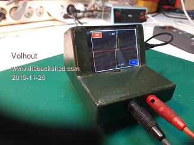

This article describes the design of a electronics debugging tool for electronic circuits.

It's main purpose of the tool is to give a graphical representation of the impedance at a node of the circuit, similar to a commercial product, the Huntron Tracker.
The tool allows for very fast fault finding in electronic circuits, especially when a known good circuit is available, so graphs can be compared.
You can find the faults in a circuit without taking components out. That is a great benefit.
Typically you have this tool on the test bench, and next to each other 2 boards, one known good, the other suspect of fault. The ground connection of the test tool is connected to the same pin on each board (typically the ground node). The test wire is used to alternatively probe the good board at node X, and the suspect board at the same node. When waveforms differ between boards, that points to the culprit. The tool has a memory button, so the waveform of the known good board can be checked more carefully.
If there is no "known good" circuit is available, still comparison can be made to similar nodes in the same circuit, and differences will point to the culprit.
In example microprocessor pins are all similar, if one pin shows a different impedance, there is reason to doubt the microprocessor as being defect.
Creating an impedance graph is based on a very simple principle: apply a voltage to that pin, and measure the current that flows in the pin.
By applying different voltage, the impedance at each voltage can be shown in a graph.
A good description of the circuit can be found here:
OctopusTypical test voltages are +/- 15V at currents of a few mA, to avoid damage to the circuit under test.
As explained in the article, for resistors, Ohms law U=IxR will show a linear relation between voltage and current. A straight line.
For a diode, at positive voltages the impedance will be low, and negative voltage will be high. Result will be a line with a bend.
This kind of characteristics are visible on the screen of the Backpack Tracker.
The name "Backpack" is from the core building block of this tool: the Micromite Backpack.
The Micromite Backpack is a design of Geoff Graham, and is based around a PIC32 processor that can be programmed in Basic. Information can be found here:
BackpackThe Micromite Backpack is a 2 circuit board sandwich existing of a PIC32 board, and a commercial ILI9341 LCD touch color display 320x240 pixels.
In this design the LCD will display the impedance curves, and will act as a very simple control panel with only 2 (touch) buttons.
The PIC32 microcontroller will generate the voltage applied to the circuit under test, measure the current and convert the measurements to an impedance graph.
The software is written in MMBasic, the native language of the Micromite Backpack.
Since the PIC32 processor can only output voltages in the range of 0V..3.3V, an additional amplifier is needed to achieve the +/- 15V.
This amplifier, and it's power supply, are located on a third printed circuit board.
The amplifier schematics are shown here:

A short explanation of the circuit:
The PIC32 processor does not have a DAC output that can be used to generate different voltages, therefore a PWM output is used, running at a rather high frequency of 120kHz. This frequency is an optimum between resolution (the higher the frequency - the lower the resolution, the lower the frequency - the slower the voltages can be varied, the lower the screen update rate).
The PWM signal passes through a low pass filter, to convert it into an analog voltage, that can be amplified by a classical opamp circuit around an LM741.
The LM741 is powered from +/- 16.5V that is generated from 5V in an MC34063 switch mode convertor.
The circuitry fits on a small PCB, the size of the micromite backpack (could form a sandwich of 3).
The circuit board layout is shown here:

J1 is the connector that plugs into the micromite backpack.
Download PCB foil (solder side view)Download PCB foil (component side view)To understand how the circuit works it is necessary to know that the current measurement, required to determine the impedance of the circuit under test, is done through a trick: the ADC inside the PIC32 measures the output voltage of the LM741 after it passed through a resistor R16, and subtracts the measured value from the theoretical output voltage of the LM741. result is the voltage across that resistor, and thus the current through the resistor.
Since this principle (subtract 2 large values to get a small value) is in essence inaccurate, the software performs a calibration at powerup.
A picture of the displayed waveform is shown here:

There are 2 buttons:
MEM: this button stores the current waveform, and displays it in red, as a reference. This would be the waveform of the "known good" circuit.
ZOOM: this button zooms in at the center, to allow more detail if low voltage circuits are probed.
In the screen there is a waveform, characteristic for the impedance of the pin under test (yellow), and 2 markers (cyan).
The markers show the voltage at the waveform extremes, and can be used to detect smaller changes between very similar impedance's. Very handy to check zener diodes.
When building the Backpack Tracker, some things are important to note.
The LM741 was chosen because of it's supply voltage range. To reach an output of +/-15V (actually +/-14V at the test pins) the opamp needs a supply voltage of +/- 16.5V or more. Most opamps are specified up to +/- 15V supply voltage. The LM741 to +/-18V. Alternatives to the LM741 are: MC34071 and TLE2141IP (+/- 22V). The MC34063 switch mode convertor can be replaced by a MC33063.
For the resistors preferably use 1% parts, since the gain and offset of the amplifier, and the centering of the ADC input at half 3.3V need to be fairly accurate.
The tool is powered from 5V (a phone charger) of from the USB power of a PC.
Essential to it's performance is the calibration at powerup. It requires the test leads (J2/J3) to be disconnected from any object during powerup.
The software will also work on a ArmmiteF4 (commercial ARM based platform with LCD module, ported to MMBasic by Peter Mather). However, the hardware is not optimal for the Armmite. The Armmite processor is much faster, so the update rate is faster. The PWM low pass filter cannot settle fast enough, resulting in a more "jagged" waveform display. And the connector pinning (J1) is different so some flying wires are needed.
Some explanation of the software:
The voltage waveform is pre-calculated (a triangle waveform).
In a tight loop (main) the new voltage is sent to the PWM. While waiting for the settling of the PWM low pass filter the last line segment is erased (color=black), the memory line segment drawn(memcolor). Then the ADC is read, and the new value is drawn (yellow).
If the memory line must be displayed, memcolor = red, if not , memcolor is black (so it is drawn for nothing...but that avoids another IF statement).
This loop determines the screen update rate. With current settings (samples = 64) the screen updates every 110msec (8.5 frames/second).
Once every second a timer fires, and the markers are updated, and the screen border is re-drawn. Redrawing the screen border is needed since MMBasic on the micromite backpack only has one grapical layer, and the border can be corrupted by the impedance lines.
At powerup the system is calibrated at it's 10% and 90% points (the LM741 is used up to it's limits, and may become slightly non linear at 0% and 100% points).
Zooming in is partly done in hardware: only half the voltage (+/- 7V) is applied to the test pin. This gives full resolution to the PWM in only +/- 7V. The ADC (12 bits) has sufficient accuracy, even if only used at half scale.
Zoom and Memory are touch buttons. For robustness and ease of use, the touch location is set very wide.
The Basic code that runs the tracker:
'+-------------------------------------------------------------+
'| |
'| BACKPACK TRACKER |
'| |
'| 10-2019 Volhout @ TheBackShed.com |
'+-------------------------------------------------------------+
' Curve tracer type huntron tracker
' For ILI9341 LCD backpack on 28 pin MX170
' Uses pin 24 as analog input
' Uses pin 4 as pwm output
' Uses pin 9 and 10 to set amplifier gain
' all values scaled to 'resolution'
' there are 'samples' measurements per period
' V11 has support for ARMmiteF4
'------------------------- Version History ------------------
' V00 Proof of concept with 640 samples 100 resolution
' V01 Increase resolution to 1000, decrease samples to 200
' V02 Implemented touch for REF and ZOOM buttons, REF added
' V03 Optimized main loop from 400msec to 300msec
' V04 Implemented support for HW zoom
' V05 Zoom implemented in SW
' V06 Restructure code to support samples and resolution as constants
' V07 Tune performance on MX170 ( 8 frames / second )
' V08 Improved code for readability, remove obsolete DIM's
' V09 Screen resolution independent (untested), added header
' V10 Add dynamic measurement values
' V11 Support for ArmiteF4 (untested with hardware)
'------------------------------ init ------------------------
Option explicit
init:
If MM.Device$ = "ARMmite F407" Then
'STM32F407VET6 initialisation
'OPTION LCDPANEL ILI9341_16, LANDSCAPE
'TOUCH PB12, PC5
Const ADC_PIN = 15 ' 15/PC0 for F4
Const HI_GAIN_HI = 1 ' switch to high gain, PE2/pin1 for F4
Const HI_GAIN_LO = 5 ' switch to high gain, PE6/pin5 for F4
GUI interrupt Touch_Int
Else
'PIC32MX170 initialisation
'OPTION LCDPANEL ILI9341, L, 2, 23, 6
'OPTION TOUCH 7, 15
CPU 48 ' max speed - not needed in ARM F4
Const ADC_PIN = 24 ' 24 for MX170
Const HI_GAIN_HI = 10 ' switch to high gain, 10 for MX
Const HI_GAIN_LO = 9 ' switch to high gain, 9 for MX
' enable touch
SetPin 15, INTL, Touch_Int
End If
'start board
SetPin ADC_PIN,ain ' voltage input ADC1-ch10 (at pin 15)
PWM 1,120000,50 ' set PWM to 50% (0Vdc amplifier out)
' pin 31/PA6 on F4, pin 4 on MX170
amp_high_gain ' set amplifier gain
' Define samples each scan
Const samples = 64
Const resolution = 1000
' external ADC divider (R15=47k into R10=12k//R11=15k)
Const R10_R11 = 12000*15000/(12000+15000)
Const resistor_divider = (47000 + R10_R11)/R10_R11
' Declare variables -------------------------------------------------
' Declare defaults for scaling ADC to 'resolution', these values
' are fine tuned in calibration (at powerup)
Dim integer lowgain=resolution/3.3, highgain=2*lowgain
Dim gain=lowgain
Dim integer lowoffset=0, highoffset=-resolution/2
Dim offset=lowoffset
' for user interface, xt/yt are touch coordinates
Dim integer xt,yt
' generic i,j,h are counters, ADC is scaled adc value, adc10 and adc90
' are used in calibration
Dim integer i,j,h,ADC
Dim float adc10,adc90
' display waveform, x/y are measured waveform, xr/yr are memory reference
Dim integer x0,y0,x(samples),y(samples),xr(samples),yr(samples)
' init coordinates with values that fit the screen
For i=1 To samples
xr(i)=MM.HRes-3:yr(i)=MM.VRes/2:x(i)=MM.HRes-3:y(i)=MM.VRes/2
Next i
x0=MM.HRes-3:y0=MM.VRes/2
' display numerics, xnl/ynl for left side, xnr/ynr for right side
Dim integer xnr=100,xnl=100,ynr=100,ynl=100,yor=0,yol=0
Dim float vr,ir,vl,il
' generate waveform, pw = pwm value, pc = pwm value scaled to 'resolution'
Dim pw(samples), pc(samples)
' fill waveform with triange wave 0...100%
For i=1 To samples / 2
pw(i) = 100 - ( 200 / samples ) * i
pc(i) = resolution * pw(i) / 100
pw(i + samples / 2) = ( 200 / samples ) * i
pc(i + samples / 2) = resolution * pw(i + samples / 2) / 100
Next
' graphics scaling to resolution
Dim float Vstep = MM.VRes / resolution, Hstep = MM.HRes / resolution
Dim center = resolution / 2
' buttons and line colors
Dim integer membuttoncolor = RGB(blue), zoombuttoncolor = RGB(blue)
Dim integer memcolor = RGB(black), linecolor = RGB(yellow)
'debug
Memory
' initialize screen
draw_window
' timed interrupts
SetTick 1000, Time_Int, 1
' calibrate analog circuits
calibrate
'------------------------------ MAIN ------------------------
main:
' all comments removed from main loop to speed it up
' cycle through all pwm values using pointers i (actual) and j (last)
' erase last segment
' allways draw memory line, but color decides if it is visible
' draw memory line first so actual overwrites memory
' measure input value
' recalculate new segment (huntron method)
' draw new segement
Do
Timer = 0
For i = 1 To samples
j = i - 1 : If j = 0 Then j = samples
PWM 1,120000,pw(i)
Line x0,y0,x(i),y(i),1,0
Line xr(j),yr(j),xr(i),yr(i),1,memcolor
x0 = x(i) : y0 = y(i)
ADC=(Pin(ADC_PIN) * gain) + offset
y(i)=(ADC - pc(i) + center) * Vstep
x(i)= ADC * Hstep
Line x(j),y(j),x(i),y(i),1,linecolor
Next i
Print Timer
Loop
'--------------------------- SUBS ---------------------------
Sub Touch_Int
xt = Touch(x) : yt = Touch(y)
'check for MEM button if we should display memory
If xt < ( MM.HRes / 4 ) And yt < ( MM.VRes / 4 ) Then
If memcolor = RGB(black) Then
For h = 1 To samples 'copy live to REF line
yr(h) = y(h)
xr(h) = x(h)
Next
memcolor = RGB(red)
membuttoncolor = RGB(red)
Else
memcolor = RGB(black)
membuttoncolor = RGB(Blue)
End If
RBox 10,10,60,30,2,RGB(white),membuttoncolor
Text 30,18,"MEM",,,,RGB(white),membuttoncolor
End If
'check for ZOOM button to see if we should zoom in
If xt > (3 * MM.HRes / 4 ) And yt > (3 * MM.VRes / 4) Then
If zoombuttoncolor = RGB(blue) Then
zoombuttoncolor = RGB(red)
adc_high_gain
amp_low_gain
Else
zoombuttoncolor = RGB(Blue)
adc_low_gain
amp_high_gain
End If
RBox MM.HRes-70,MM.VRes-40,60,30,2,RGB(white),zoombuttoncolor
Text MM.HRes-55,MM.VRes-32,"ZOOM",,,,RGB(white),zoombuttoncolor
End If
draw_frame
Pause 300 'prevent double touch
End Sub
Sub amp_high_gain
SetPin HI_GAIN_LO,dout : Pin(HI_GAIN_LO)=0
SetPin HI_GAIN_HI,dout : Pin(HI_GAIN_HI)=1
End Sub
Sub amp_low_gain
SetPin HI_GAIN_LO,din
SetPin HI_GAIN_HI,din
End Sub
Sub adc_high_gain
gain = highgain
offset = highoffset
End Sub
Sub adc_low_gain
gain = lowgain
offset = lowoffset
End Sub
Sub draw_window
'clear screen
CLS
'draw outside lines
draw_frame
'draw buttons
RBox 10,10,60,30,2,RGB(white),membuttoncolor
Text 30,18,"MEM",,,,RGB(white),membuttoncolor
RBox MM.HRes-70,MM.VRes-40,60,30,2,RGB(white),zoombuttoncolor
Text MM.HRes-55,MM.VRes-32,"ZOOM",,,,RGB(white),zoombuttoncolor
End Sub
Sub calibrate
'calibrate standard mode ------------
amp_high_gain
adc_low_gain
'measure 10% and 90% points
PWM 1,120000,10
Pause 1
adc10 = Pin(ADC_PIN)
PWM 1,120000,90
Pause 1
adc90 = Pin(ADC_PIN)
'calculate ADC low gain and offset
lowgain = 80 * resolution / (100 * (adc90 - adc10))
lowoffset = - lowgain * (adc10 - ((adc90 - adc10)/8))
Print lowgain , lowoffset
'calibrate zoom mode --------------
amp_low_gain
adc_high_gain
'measure 10% and 90% values
PWM 1,120000,10
Pause 1
adc10 = Pin(ADC_PIN)
PWM 1,120000,90
Pause 1
adc90 = Pin(ADC_PIN)
'calculate ADC high gain and offset
highgain = 80 * resolution / (100 * (adc90 - adc10))
highoffset = - highgain * (adc10 - ((adc90 - adc10)/8))
Print highgain , highoffset
'back to standard mode
amp_high_gain
adc_low_gain
End Sub
Sub draw_frame
'draw outside lines
Line 1,1,1,MM.VRes-2,2,RGB(white)
Line 1,MM.VRes-2,MM.HRes-2,MM.VRes-2,2,RGB(white)
Line MM.HRes-2,MM.VRes-2,MM.HRes-2,1,2,RGB(white)
Line MM.HRes-2,1,1,1,2,RGB(white)
End Sub
Sub Time_Int
'check if left marker needs update
If ynl <> y(samples/2) Then
'erase old text
Text xnl+12,ynl+yol," ",l,,,0,0
'write markers
Box xnl-5,ynl-5,10,10,,0
' calculate voltage
xnl = x(samples/2): ynl = y(samples/2)
vl = resistor_divider * ((xnl - MM.HRes / 2) / Hstep) / gain
' repair corrupted frame
draw_frame
'write markers
Box xnl-5,ynl-5,10,10,,RGB(cyan)
'get new coordinates for writing text, and write
If ynl > MM.VRes-30 Then yol=-20 Else yol=5
Text xnl+12,ynl+yol,Str$(vl,0,2)+"V",l,,,RGB(white),0
End If
' check if right marker needs an update
If ynr <> y(samples) Then
'erase old text
Text xnr-12,ynr+yor," ",r,,,0,0
'write markers
Box xnr-5,ynr-5,10,10,,0
' calculate voltage
xnr = x(samples): ynr = y(samples)
vr = resistor_divider * ((xnr - MM.HRes / 2) / Hstep) / gain
' repair corrupted frame
draw_frame
'write markers
Box xnr-5,ynr-5,10,10,,RGB(cyan)
'get new coordinates for writing text, and write
If ynr < 30 Then yor=5 Else yor=-20
Text xnr-12,ynr+yor,Str$(vr,0,2)+"V",r,,,RGB(white),0
End If
End Sub